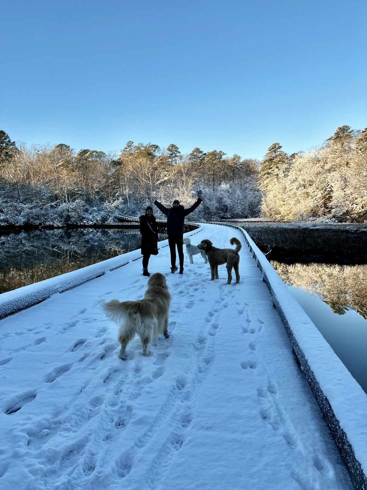

I have a friend who is one of the most loyal, have-your-back people I know. If I called her at 2 a.m. from the side of a road, she would be in the car before I finished the sentence. Most mornings you can find the two of us out walking our dogs together, which is really just proof that our dogs run our lives. Their social needs trump our sleeping in, every single time. And yet, for years, the two of us would butt heads over things I could never quite name. I would leave a conversation feeling prickly as a cactus, and I suspect she did too.
The strange part was that the feeling was familiar.
My husband used to do this to me sometimes. I love the man, and this is not a complaint about his character. But every so often I would tell him about my day and he would meet it with a better way I could have handled it. I would walk away feeling like I had failed some test I did not know I was taking. It was not malicious. He was in problem-solving mode, sure he was helping. I did not have the words for why it wore on me until we sat down and someone handed them to us.
The two of us had attended a lecture by a well-known mental health professional who specializes in parent-child relationships. When a child comes to you and tells you about something that happened, she said, and your response is to explain how you would have handled it differently, the child does not hear help. The child hears a verdict. You are solving a problem that does not exist, and in the process you are telling them one does. Do this often enough and the message underneath becomes clear: I do not think you are capable of handling your own life. She said it erodes self-esteem one well-meaning correction at a time.
Then she said the part that stuck. Often people are not asking you to fix anything. They just want to tell you what happened. They want a witness, not a consultant.
That lecture named the thing my husband and I had been circling for years, and we went to work on it. Bad habits die hard. But we both got better at telling the difference between a problem to solve and a day to simply hear.
So by the time I sat with the friction between me and my friend, I finally had a name for it. Every story I brought her came back to me sanded down into a lesson, a better route, a thing I might try next time. She was not being unkind. She loved me and she wanted to help. Once I understood it, she and I talked. These days I sometimes set the terms before I start. I am only telling you this, I am not looking for a solution.
There is a version of this that belongs to our work. In veterinary medicine there are so many ways to work up and treat a case, and a good number of them are entirely appropriate. When you are forever telling a colleague how you would have done it differently, you are not just bruising their confidence. You are squashing their creativity, teaching them there is one right way through a case, yours, when medicine almost never has one right answer.
And here is where I have to be honest about myself. I hated being fixed, but I still spent years being the fixer at work. It turns out the habit you resent in other people is the easiest one to miss in yourself.
A colleague came to me about a case that was eating at her. A young family had come in with their two-year-old Labrador, an open fracture of a hind leg after being hit by a car. They wanted the best care possible for their dog. Money is no object, they told her. So she did what any of us would do with a young patient and a family who said that out loud. She referred them to the emergency hospital for an orthopedic consult. She mentioned amputation as an option before they left, but she did not press it.
Later that day she heard back from the owners. The ortho salvage was out of their budget. They had said money was no object without any real sense of what orthopedic surgery costs in veterinary medicine, and by the time they learned, they were sitting in a specialty hospital with a number in front of them they could not make work.
She came back to me still turning it over, asking herself the only question that mattered to her: should I have pushed harder. She was already deep in could’ve, should’ve, would’ve, already replaying the exam room.
And I did what I used to do. I did not let her finish. Somewhere around the words open fracture and cannot afford the specialist, I had already done the math, and I could not get the answer out fast enough. Call the owners right now, I told her. Tell them we can do the amputation here. Your fee will come in well under an ortho salvage. It is the obvious answer.
I was patting myself on the back when I noticed her face.
The owners had opted for euthanasia at the specialty hospital. That was the part she had been getting to when I ran her over with my brilliant idea.
I had not given her one piece of information she did not already have. She knew she could have done that surgery. She had been chewing on exactly that for days. What I gave her was a verdict. A colleague she respected, confirming the worst thing she had been whispering to herself, and doing it cheerfully, like it was a fun little puzzle I had solved in eight seconds. She had done the right thing with the information she had, and what she needed from me was someone to say that out loud. Instead I stomped on the self-doubt she was already carrying.
You are solving a problem that does not exist.
I was solving a problem that did not exist, and in doing it I told her one did.
My idea was clinically sound. I was still no help to her at all.
So here is what I try to do now, and I offer it as someone who still fails at it regularly, not someone who has it solved.
Any time I catch myself about to open with I would have, you should have, or we could have, I stop and ask what this conversation is actually for. Is this person venting? Then my job is to be the person they can vent to, full stop. That job is the easier of the two and we are terrible at it. That was awful. I am sorry. Tell me the rest. The urge to add value will scream at you. Ignore it. Nobody asked for value.
Did they genuinely miss something clinical, something that changes the care of the next patient? Then it is a mentoring moment, and real mentoring almost never starts with the answer. It starts with a question, and not a leading one where you already know where you are steering. A real question, asked because you were not in that room and you do not actually know what she was weighing.
What did the family tell you they could manage. What were you afraid of when you decided not to push it.
I never asked her either of those things.
That is the part that stays with me. I do not know what she was carrying that day. I have my guesses, and any vet reading this probably has the same ones. That she could not stomach taking a leg off a two-year-old Labrador who had most of his life ahead of him, not when a specialist might have saved it. That the family had told her money was no object and she took them at their word, because taking people at their word is how you build trust.
And that phrase, money is no object, is one of the more dangerous sentences a client can say to us. Sometimes they mean it. Sometimes it is what people say when they have not yet seen the estimate, and money turns out to be very much the object once the number is on the table. We are not mind readers. We believe them, and then we get burned by it, and then we lie awake wondering what we should have done differently.
Any of us could guess all of that. But I never asked, so I do not know, and I never will.
What I do know is that she came to me carrying something heavy and left carrying more of it. That was not a knowledge gap I could have closed with a better idea. It was a moment I could only have met by shutting up.
The hardest part is trusting that listening counts as doing something. For those of us wired to fix, sitting still feels like failure. It is not. Some weeks the most useful thing you will do for a colleague is close your mouth, stay in the chair, and let them know you heard them.
My friend and I still take those morning walks, dogs pulling us down the same wooded trails they always have. The difference is that we have both learned to just walk. To let a hard week be spoken out loud without turning it into a lesson. Funny thing. Now that neither of us is trying to fix everything between the trailhead and the turnaround, the walks are the most peaceful part of my day.

Dogs who rule their moms’ schedules.
— Dr. V
The Gray Oak Journal
Dr. V is a veterinarian with over twenty years of clinical and operational leadership experience. She has owned and operated several veterinary hospitals, weathered many shifts in the industry, and served on advisory councils. She writes The Gray Oak Journal at grayoakjournal.com.
Photographs by the author.